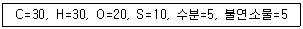
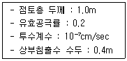
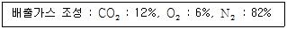
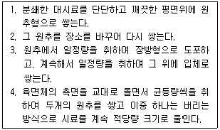
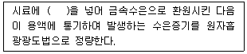

폐기물처리산업기사 (2010-09-05 기출문제)
1과목: 폐기물개론
1. 쓰레기 중 가연성 쓰레기가 30%이다. 밀도가 550kg/m3인 쓰레기 3m3의 가연성 물질의 중량은 얼마인가?
- 415kg
- 435kg
- 455kg
- 495kg
(정답률: 80%)

2. 다음의 폐기물의 성상분석의 절차 중 가장 먼저 시행하는 것은?
- 물리적 조성
- 분류
- 화학적 조성분석
- 발열량 측정
(정답률: 알수없음)
3. 함수율 90%인 슬러지 1kg을 농축하여 함수율이 50%로 되었다. 이때 제거된 수분양은 얼마(kg)인가? (단, 비중은 1.0 기준)
- 0.5
- 0.6
- 0.7
- 0.8
(정답률: 알수없음)
4. 부피 감소율이 80%로 하기 위한 압축비는?
- 3
- 4
- 5
- 6
(정답률: 알수없음)
5. 국내 쓰레기 수거노선 설정시 유의할 사항으로 옳지 않은 것은?
- 발생량이 아주 많은 곳은 하루 중 가장 먼저 수거한다.
- 될 수 있는 한 한번 간 길은 가지 않는다.
- 가능한 한 반시계방향으로 수거노선을 정한다.
- 적은 양의 쓰레기가 발생하나 동일한 수거빈도를 받기를 원하는 적재지점은 가능한 한 같은 날 왕복 내에서 수거하도록 한다.
(정답률: 77%)
6. 쓰레기 발생량 예측모델 중 쓰레기 발생량에 영향을 주는 모든인자를 시간에 대한 함수로 하여 각 영향인자들간의 상관관계를 수식화하는 방법은?
- 시간경향모델
- 다중회귀모델
- 동적모사모델
- 시간수지모델
(정답률: 알수없음)
7. 어떤 쓰레기의 입도를 분석하였더니 입도누적 곡선상의 10%, 30%, 60%, 90%의 입경이 각각 1, 5, 10, 20mm였다. 이 때 곡률계수는?
- 2.5
- 5.0
- 7.5
- 10.0
(정답률: 73%)
8. 폐기물을 분쇄하거나 파쇄하는 목적과 가장 거리가 먼 것은?
- 겉보기 비중의 감소
- 유가물의 분리
- 비표면적의 증가
- 입경분포의 균일화
(정답률: 알수없음)
9. 다음과 같은 조성의 폐기물의 고위발열량(kcal/kg)은? (단, 탄소, 수소, 황의 연소반응열은 각각 8100kcal/kg, 34000kcal/kg, 2500kcal/kg으로 하며 Dulong식을 이용)

- 약 10000 kcal/kg
- 약 11000 kcal/kg
- 약 12000 kcal/kg
- 약 13000 kcal/kg
(정답률: 55%)
10. 함수율 50%인 1kg의 쓰레기를 건조시켜 함수율 25%로 하였을 때 건조 쓰레기의 무게는 몇 kg인가?
- 0.72
- 0.67
- 0.54
- 0.48
(정답률: 80%)
11. 폐기물 관리시 비용이 가장 많이 드는 것은?
- 수거 및 운반
- 중간처리
- 저장
- 최종처리
(정답률: 알수없음)
12. 밀도가 600kg/m3인 쓰레기 10톤을 압축시켜 부피를 5m3으로 만들었다면 부피 감소율(Volume Reduction, %)은?
- 80
- 75
- 70
- 65
(정답률: 알수없음)
13. 다음과 같은 도시에서 발생하는 쓰레기를 인부 40명이 수거하고 운반할 때 MHT는 얼마인가? (단, 1일 8시간 작업, 연간 작업일수 300일, 연간 쓰레기 발생량 : 40,000톤)
- 2.1
- 2.4
- 2.7
- 2.9
(정답률: 73%)
14. 함수율 80%인 슬러지 100m3과 함수율 40%인 1000m3의 쓰레기를 혼합했을 때 함수율(%)은?
- 41.3
- 43.6
- 46.0
- 49.3
(정답률: 알수없음)
15. 인구 1,500,000명의 도시에서 800,000 ton/year의 쓰레기를 매립처리하였다. 이 도시의 1인당 1일 쓰레기의 발생량은?
- 1.⑤kg/인·일
- 1.26kg/인·일
- 1.46kg/인·일
- 1.65kg/인·일
(정답률: 알수없음)
16. 폐기물 수거의 효율성을 향상시키기 위한 적환장 설치 위치를 고려 사항으로 옳지 않은 것은?
- 쉽게 간선도로에 연결되며, 2차 보조 수송수단에의 연결이 쉬운 곳
- 건설비와 운영비가 적게 들고 경제적인 곳
- 수거 쓰레기 발생지역의 무게중심에서 가능한 한 먼 곳
- 주민의 반대가 적고, 환경적 영향이 최소인 곳
(정답률: 알수없음)
17. 가볍고 물렁거리는 물질로부터 무겁고 딱딱한 물질을 분리해낼 때 사용하며 주로 퇴비 중의 유리조각을 추출할 때 사용하는 선별방법은?
- Tables
- Stoners
- Jigs
- Secators
(정답률: 알수없음)
18. 쓰레기를 소각했을 때 남은 재의 중량은 쓰레기 중량의 약 1/3이다. 쓰레기 90ton을 소각했을 때 재의 용적이 8m3라고 하면 재의 밀도는?
- 2.5 ton/m3
- 2.8 ton/m3
- 3.8 ton/m3
- 4.2 ton/m3
(정답률: 알수없음)
19. 적환장이 필요한 경우와 가장 거리가 먼 것은?
- 고밀도 주거지역이 존재하는 경우
- 불법투기와 다량의 어지러진 쓰레기들이 발생하는 경우
- 상업지역에서 폐기물 수집에 소형용기를 많이 사용하는 경우
- 슬러지 수송이나 공기수송 방식을 사용하는 경우
(정답률: 64%)
20. pH가 3인 폐산용액은 pH가 6인 폐산용액에 비해 수소이온이 몇 배 더 함유되어 있는가?
- 1/3배
- 3배
- 30배
- 1000배
(정답률: 알수없음)
2과목: 폐기물처리기술
21. 다음과 같은 매립지내 침출수가 차수층을 통과하는데 소요되는 시간은?

- 약 3.8년
- 약 4.5년
- 약 5.3년
- 약 6.2년
(정답률: 50%)
22. 메탄 1Sm3를 공기과잉계수 1.8로 연소시킬 경우, 실제 습윤 연소가스량(Sm3)은?
- 약 15.4
- 약 16.3
- 약 18.1
- 약 19.6
(정답률: 42%)
23. 5kg의 탄소를 완전연소 시키는데 필요한 이론적 공기량은 몇Sm3인가?
- 34.5
- 44.5
- 55.5
- 65.5
(정답률: 50%)
24. 고형화 방법 중 자가시멘트법에 과한 설명으로 옳지 않은 것은?
- 혼합율(MR)이 높다.
- 고농도 황화물 함유 폐기물에 적용된다.
- 탈수 등 전처리가 필요 없다.
- 보조에너지가 필요하다.
(정답률: 55%)
25. 다음의 건조기준 연소가스 조성에서 공기 과잉계수는? (단, 표준 상태 기준)

- 1.12
- 1.21
- 1.38
- 1.47
(정답률: 24%)
26. 호기성 퇴비화공정의 설계 운영고려 인자에 관한 설명으로 옳지 않은 것은?
- C/N비가 낮으면 암모니아 가스가 발생하며 생물학적 활성이 떨어진다.
- 하수슬러지는 폐기물과 함께 퇴비화가 간능하며 슬러지를 첨가할 경우 최종 수분함량이 중요한 인자로 작용한다.
- 퇴비내 공기의 채널링 효과를 유지하기 위해 반응기간동안 규칙적으로 교반하거나 뒤집어 주어야 한다.
- 암모니아 가스에 의한 질소 손실을 줄이기 위해서 Ph가 8.5이상 올라가지 않도록 주의한다.
(정답률: 알수없음)
27. 합성차수막의 Crystallinity가 증가할수록 나타내는 성질에 관한 설명으로 옳지 않은 것은?
- 충격에 강해짐
- 화학물질에 대한 저항성 증가
- 인장강도 증가
- 투수계수 감소
(정답률: 알수없음)
28. 연소개선에 의한 NOx의 발생억제 방법이 아닌 것은?
- 낮은 공기비로 연소시킨다.
- 연소용 공기의 예열온도를 낮춘다.
- 비선택적으로 접촉환원시켜 연소한다.
- 2단 연소시킨다.
(정답률: 55%)
29. 건조된 슬러지 고형분의 비중이 1.28이며, 건조 이전의 슬러지 내 고형분 함량이 30%일 때 건조 전 슬러지의 비중은?
- 1.093
- 1.070
- 1.043
- 1.014
(정답률: 알수없음)
30. 토양의 용적밀도가 1.67g/cm3 이고, 입자미도가 2.55g/cm3 일 때 공극률은? (단, 물의 비중은 1로 가정하며 기타조건은 고려안함)
- 34.5%
- 39.5%
- 42.4%
- 46.5%
(정답률: 알수없음)
31. 탄소 81%, 수소 16%, 황 3%로 구성된 중유 3kg의 연소에 필요한 이론공기량은?
- 31.7Sm3
- 34.7Sm3
- 45.8Sm3
- 48.6Sm3
(정답률: 42%)
32. 인구 5000명인 도시에서 1인 1일 쓰레기 배출량이 1.5kg이고 밀도가 0.45ton/m3인 쓰레기를 매립용량이 20000m3인 트랜치에 매립, 처분하고자 할 때 크랜치의 사용일수는? (단, 매립 쓰레기 부피감소율은 35%이며, 기타 조건은 고려하지 않음)
- 약 1850일
- 약 1950일
- 약 2⑤0일
- 약 2150일
(정답률: 34%)
33. 수분함량이 97%인 슬러지의 비중은? (단, 고형물의 비중은 1.35)
- 약 1.062
- 약 1.042
- 약 1.028
- 약 1.008
(정답률: 70%)
34. 침출수를 혐기성여상으로 처리할 때 유입유량 1500m3/day 이고 BOD가 500mg/L이며 처리효율이 95%이다. 이때 발생되는 메탄가스의 양은 몇 m3/day인가? (단, 1.5m3가스/BODkg, 가스 중 메탄함량 60%, 표준상태 기준)
- 약 440
- 약 540
- 약 640
- 약 740
(정답률: 50%)
35. 매립지의 합성차수막 중 PVC의 장·단점에 관한 설명으로 옳지 않은 것은?
- 가격이 저렴하며 작업이 용이하다.
- 강도가 약하다.
- 대부분의 유기화합물질에 약하다.
- 접합이 용이하다.
(정답률: 알수없음)
36. 매립지의 가스발생 단계(4단계 기준) 중 이산화탄소가 생성되기 시작하며 산소와 질소가 감소하는 단계로 가장 적절한 것은?
- 호기성 상태
- 혐기성 숙성
- 혐기성 도달
- 혐기성 정상 상태
(정답률: 알수없음)
37. 축산분뇨 처리장에서 BOD 30000mg/L의 축산분뇨를 25배 희석한 후 BOD제거 효율 98%로 처리하였다면 처리수의 BOD는 몇 mg/L인가?
- 12
- 24
- 30
- 36
(정답률: 알수없음)
38. 세로, 가로, 높이가 각각 1.0m, 1.2m, 1.5m인 연소실에서 연소실 열 발생율이 3×105kcal/m3·h으로 유지하려면 저위발열량이 30000kcal/kg인 중유를 매시간 얼마나 연소시켜야 하는가?
- 18kg
- 24kg
- 36kg
- 42kg
(정답률: 알수없음)
39. 화격자식(stoker)소각로에 대한 설명으로 옳지 않은 것은?
- 연속적인 소각과 배출이 가능하다
- 체류시간이 짧고 교반력이 강하여 국부가열 발생이 적다
- 고온 중에서 기계적으로 구동하기 때문에 금속부의 마모손실이 심하다
- 플라스틱 등과 같이 열에 쉽게 용해되는 물질은 화격자가 막힐 염려가 있다
(정답률: 알수없음)
40. 다음 중 토양증기 추출법의 장단점으로 틀린 것은? (단, Bioventing 법과 비교)
- 결과를 즉시 알 수 있음
- 일반적으로 널리 사용되는 장치 재료로 충분함
- 증기압이 낮은 오염물질의 제거효율도 높음
- 추출된 기체는 대기오염방지를 위하여 후처리가 필요함
(정답률: 알수없음)
3과목: 폐기물 공정시험 기준(방법)
41. 다음이 설명하고 있는 시료 축소방법은?

- 구획법
- 원추 2분법
- 원추 4분법
- 교호삽법
(정답률: 알수없음)
42. 폐기물 중 구리 함량을 분석하기 위한 흡광광도법에 대한 설명으로 옳은 것은?
- 구리이온은 산성에서 디에틸디티오카르바민산나트륨과 반응하여 황색의 킬레이트 화합물을 생성한다.
- 구리이온은 산성에서 디에틸디티오카르바민산나트륨과 반응하여 적자색의 킬레이트 화합물을 생성한다.
- 구리이온은 알칼리성에서 디에틸디티오카르바민산나트륨과 반응하여 황갈색의 킬레이트 화합물을 생성한다.
- 구리이온은 알칼리성에서 디에틸디티오카르바민산나트륨과 반응하여 적자색의 킬레이트 화합물을 생성한다.
(정답률: 37%)
43. pH미터의 구조에 관한 설명으로 옳은 것은?
- 지시부에는 보통 유리전극과 비교전극이 있다.
- 지시부에는 보통 유리전극과 비교전극 및 온도보상용 감온지시부가 있다.
- 지시부에는 대칭 전위 조절(영점조절)용 꼭지 및 온도 보사용 꼭지가 있다.
- 지시부에는 비대칭 전위 조절(영점조절)용 꼭지 및 온도보상용 꼭지가 있다.
(정답률: 28%)
44. 흡광광도법에 의한 구리를 정량 시 사용할 수 있는 추출용매와 가장 거리가 먼 것은?
- 벤젠
- 에틸알코올
- 초산부틸
- 사염화탄소
(정답률: 55%)
45. 표준용액의 pH로 옳지 않은 것은? (단, 0℃기준)
- 수산염 표준용액 : 1.67
- 붕산염 표준용액 : 9.46
- 프탈산염 표준용액 : 5.01
- 수산화칼슘 표준용액 : 13.43
(정답률: 알수없음)
46. 폐기물 시료 채취 방법에 관한 내용 중 소각재 시료의 1회 채취 양 기준으로 옳은 것은?
- 100g 이상
- 200g 이상
- 300g 이상
- 500g 이상
(정답률: 82%)
47. 폐기물 용출시험방법의 용출조작에 관한 설명으로 옳지 않은 것은?
- 여과가 어려운 경우에는 원심분리기를 사용하여 매 분당 3000회전 이상으로 20분 이상 원심 분리한 다음, 상징액을 적당량 취하여 용출시험용 시료용액으로 한다.
- 용출시험의 결과는 시료 중의 수분함량 보정을 위해 함수율 85% 이상인 시료에 한하여 [5/(100-시료 함수율(%)]를 곱하여 계산된 값으로 한다.
- 시료조재가 끝난 혼합액은 상온, 상압에서 진탕회수가 매분 당 약 200회, 진폭 4~5cm정도로 6시간 연속진탕한다.
- 진탕한 시료는 1.0µm 의 유리섬유여과지로 여과하고 여과액을 적당량 취하여 용출시험용 시료용액으로 한다.
(정답률: 알수없음)
48. 유기물을 다량 함유하고 있으면서 산화분해가 어려운 시료들에 사용되는 시료의 전처리 방법은?
- 질산 – 과염소산-불화수소산
- 질산 - 과염소산
- 질산 – 황산
- 질산 - 염산
(정답률: 알수없음)
49. 총칙에서 규정하고 있는 사항 중 옳은 것은?
- 진공이라 함은 15mmH2O 이하를 말한다.
- 상온은 15 ~ 25℃이고 실온은 15 ~ 35℃로 한다.
- 제반시험조작은 따로 규정이 없는 한 실온에서 실시한다.
- 가스체의 농도는 표준상태(0℃, 1기압, 상대습도 0%)로 환산 표시한다.
(정답률: 알수없음)
50. 가스크로마토그래프 분석 장치에 사용하는 검출기 중 유기할로겐화합물, 니트로화합물 및 유기금속화합물을 선택적으로 검출할 수 있는 것은?
- 수소염이온화 검출기(FID)
- 염광광도 검출기(FPD)
- 열전도도 검출기(TCD)
- 전자포획 검출기 (ECD)
(정답률: 알수없음)
51. 강도 Io의 단색광이 정색액을 통과할 때 그 빛의 80%가 흡수되었다면 흡광도는?
- 약 0.5
- 약 0.6
- 약 0.7
- 약 0.8
(정답률: 55%)
52. 시료용기에 기재할 사항과 가장 거리가 먼 것은?
- 분석항목 및 기관
- 대상 폐기물의 양
- 채취책임자 이름
- 폐기물의 명칭
(정답률: 알수없음)
53. 고형물 함량이 50%, 강열감량이 80%인 폐기물의 유기물 함량(%)은?
- 60.0
- 66.7
- 75.4
- 79.2
(정답률: 60%)
54. 폐기물시료의 채취용기에 관한 설명으로 옳지 않은 것은?
- 시료용기는 무색경질의 유리병 또는 폴리에틸렌병, 폴리에틸렌백을 사용한다.
- 시료 중에 다른 물질의 혼입을 방지하기 위하여 코르크 마개를 사용하여 밀봉한다.
- 채취용기는 시료를 변질시키거나 흡착하지 아니하는 것이어야 한다.
- 노말헥산추출물질, 유기인, PCB 등의 시료채취는 무색경질의 유리병을 사용한다.
(정답률: 90%)
55. 폐기물의 용출시험결과에 대해서 함수율 95%인 시료의 수분 함량을 보정하기 위하여 곱해주는 값은?
- 1
- 3
- 5
- 7
(정답률: 40%)
56. 대상폐기물의 양이 400톤 일 때 시료의 최소 수는?
- 30
- 36
- 40
- 46
(정답률: 알수없음)
57. 수산화나트륨(NaOH) 10g을 정제수 500mL에 용해시킨 용액의 농도는? (단, 나트륨 원자량은 23)
- 0.5N
- 0.4N
- 0.3N
- 0.2N
(정답률: 73%)
58. 폐기물공정시험기준(방법)에 사용되는 용어설명 및 일반적 총칙에 관한 내용으로 옳지 않은 것은?
- '약'이라 함은 기재된 양에 대하여±10%이상의 차가 있어서는 안된다.
- 시험에 사용하는 물은 따로 규정이 없는 한 정제수 또는 탈염수를 말한다.
- '냄새가 없다'라고 기재한 것은 냄새가 없거나 또는 거의 없는 것을 표시하는 것이다.
- '정확히 취하여'라 하는 것은 규정한 양의 검체를 0.1mg 까지 달아 정확히 취하는 것을 말한다.
(정답률: 50%)
59. 수분 측정시 건조기에서의 건조시간과 건조온도로 옳은 것은? (단, 물중탕 후 건조 기준)
- 1시간, 1⑤±5℃
- 2시간, 1⑤±5℃
- 2시간, 1⑤~110℃
- 4시간, 1⑤~110℃
(정답률: 50%)
60. 다음은 수은을 원자흡광광도법으로 측정하는 원리이다. ( )안에 옳은 내용은?

- 아연분말
- 염산히드록실아민용액
- 묽은 황산(1+9)
- 염화제일주석
(정답률: 알수없음)
4과목: 폐기물 관계 법규
61. 음식물류 폐기물 처리시설에서 기술관리인의 자격기준에 해당하지 않는 것은?
- 화공산업기사
- 전기기사
- 산업위생기사
- 토목산업기사
(정답률: 알수없음)
62. 시·도지사가 재활용사업의 정지를 명령하여야 하나 해당 재활용사업의 정지로 인하여 그 재활용사업의 이용자가 폐기물을 위탁처리하지 못하여 폐기물이 사업장 안에 적체됨으로써 이용자의 사업 활동에 막대한 지장을 줄 우려가 있는 경우 그 재활용 사업자의 정지를 갈음하여 다른 사람의 사업장 폐기물을 재활용하는 자에게 부과할 수 있는 과징금의 최대 액수는?
- 2억원
- 1억원
- 5천만원
- 3천만원
(정답률: 20%)
63. 폐기물관리법에 적용 되지 않는 물질의 기준으로 옳지 않은 것은?
- 하수도법에 따른 하수
- 용기에 들어있지 아니한 기체상태의 물질
- 원자력법에 따른 방사성물질과 이로 인한여 오염된 물질
- 수질 및 수생태계 보전에 관한 법률에 의한 오수· 분뇨
(정답률: 50%)
64. 폐기물처리 기본계획에 포함되어야 하는 내용과 가장 거리가 먼 것은?
- 폐기물처리시설의 설치현황과 향후 설치 계획
- 재원의 확보 계획
- 폐기물의 감량화와 재활용 등 자원화에 관한 사항
- 폐기물별 관리 여건 및 전망
(정답률: 알수없음)
65. 매립시설의 설치를 마친 자가 환경부령으로 정하는 검사기관으로부터 설치검사를 받고자 하는 경우, 검사를 받고자 하는 날 15일 전까지 검사신청서에 각 서류를 첨부하여 검사기관에 제출하여야 하는데 그 서류에 해당하지 않는 것은?
- 설계도서 및 구조계산서 사본
- 시설운전 및 유지관리계획서
- 설치 및 장비확보명세서
- 시방서 및 재료시험성적서 사본
(정답률: 알수없음)
66. 폐기물처리시설인 멸균분쇄시설의 설치검사 항목이 아닌 것은?
- 분쇄시설의 작동상태
- 계량, 투입시설의 설치여부 및 작동상태
- 악취방지시설·건조장치의 작동상태
- 밀폐형으로 된 자동제어에 의한 처리방식인지 여부
(정답률: 알수없음)
67. 매립시설의 설치를 마친 자가 검사를 받아야 하는 검사시관(환경부령으로 정함)으로 옳지 않은 것은?
- 한국환경공단
- 한국건설기술연구원
- 한국산업기술시험원
- 한국농어촌공사
(정답률: 60%)
68. 지정폐기물의 분류번호로 지정되어 있는 폐농약이 아닌 것은? (단, 특정시설에서 발생하는 폐기물, 그 밖의 농약으로 분류되는 것은 제외함)
- 유기인계 농약
- 시안계 농약
- 유기염소계 농약
- 카바메이트계 농약
(정답률: 알수없음)
69. 지정폐기물처리담당자 등이 이수하여야 하는 교육과정으로 옳지 않은 것은?
- 사업장 지정폐기물 배출자 과정
- 폐기물처리업 기술요원 과정
- 폐기물재활용시설요원 과정
- 폐기물처리시설 기술담당자과정
(정답률: 50%)
70. 기술관리인을 두어야 할 폐기물처리시설에 대한 기준으로 옳지 않은 것은?
- 절단시설로서 1일 처리능력 100톤 이상인 시설
- 연료화시설로서 1일 처리능력이 5톤 이상인 시설
- 사료화시설로서 1일 처리능력이 5톤 이상인 시설
- 멸균· 분해시설로서 시간당 처리능력이 100킬로그램 이상인 시설
(정답률: 알수없음)
71. 특별자치도지사, 시장·군수·구청장에게 음식물류 폐기물의 배출 감량 계획 및 처리실적을 제출하고, 발생량과 처리실적 등을 기록·보전하는 등 음식물류 폐기물의 배출량을 줄이기 위해 관할 특별자치도, 시·군·구의 조례로 정하는 사항을 지켜야 하는 환경부령으로 정하는 음식물류 폐기물 배출자 기준으로 옳지 않은 것은?
- 식품위생법 규정에 따른 집단급식소(사회복지사업법에 따른 사회복지시설의 집단급식소는 제외)중 1일 평균 총 급식인원이 100명 이상인 집단급식소를 운영하는 자
- 식품위생법 규정에 따른 식품접객업 중 휴게음식점영업 및 일반음식점영업을 하는 자 중 특별자치도 또는 시·군·구의 조례로 정하는 자
- 관광진흥법 규정에 따른 관광숙박업을 영위하는 자
- 유통산업발전법에 의한 점포를 개설한 자 중 500제곱미터 이상의 영업장을 운영하는 자
(정답률: 28%)
72. 개선명령과 사용중지 명령을 받은 자가 이를 이행하지 아니하거나 그 이행이 불가능 하다는 판단에 따른 해당시설의 폐쇄명령을 이행하지 아니한 자에 대한 벌칙 기준은?
- 5년 이하의 징역 또는 3천만원 이하의 벌금
- 3년 이하의 징역 또는 2천만원 이하의 벌금
- 2년 이하의 징역 또는 1천만원 이하의 벌금
- 1년 이하의 징역 또는 5백만원 이하의 벌금
(정답률: 50%)
73. 폐기물 중간처리시설 중 화학적 처리시설에 해당되는 것은?
- 정제시설
- 연료화 시설
- 응집, 침전시설
- 소멸화 시설
(정답률: 알수없음)
74. 법에서 사용하는 용어의 뜻으로 옳지 않은 것은?
- 생활폐기물이란 사업장 폐기물 외의 폐기물을 말한다
- 폐기물처리시설이란 폐기물의 중간처리시설과 최종처리시설로서 대통령령으로 정하는 시설을 말한다
- 처리란 폐기물의 소각·중화·파쇄·고형화 등의 중간처리(재활용 포함)와 매립하거나 해역으로 배출하는 등의 최종처리를 말한다
- 재활용이란 생산 공정에서 발생하는 폐기물의 양을 줄이고 재사용, 재생을 통하여 폐기물 배출을 최소화 하는 활동을 말한다
(정답률: 42%)
75. 폐기물처리업자나 폐기물재활용신고자가 휴업·폐업 또는 재개업을 한 경우에 휴업·폐업 또는 재개업을 한 날부터 최대 며칠 이내에 신고서를 시·도지사 또는 지방환경관서의 장에게 제출하여야 하는가?
- 15일
- 20일
- 30일
- 60일
(정답률: 알수없음)
76. 관리형 매립시설에서 발생 되는 침출수의 수소이온통도(pH) 배출허용기준으로 적절한 것은?
- 5.8 ~ 8.0
- 5.3 ~ 8.0
- 5.3 ~ 8.3
- 4.8 ~ 8.3
(정답률: 50%)
77. 다음 사항 중 설치승인을 얻은 폐기물처리시설의 변경승인을 받아야 할 대상이 아닌 것은?
- 대표자 변경
- 처리시설 소재지의 변경
- 처리대상 폐기물의 변경
- 매립시설 제방의 증·개축
(정답률: 60%)
78. 기술관리인을 임명하지 아니하고 기술관리 대행 계약을 체결하지 아니한 대통령령으로 정하는 폐기물처리시설을 설치 운영하는 자에 대한 과태료 처분기준은?
- 1천만원 이하
- 5백만원 이하
- 3백만원 이하
- 2백만원 이하
(정답률: 알수없음)
79. 사용 종료되거나 폐쇄된 매립시설이 소재한 토지의 소유권 또는 소유권 외의 권리를 가지고 있는 자가 그 토지를 이용하기 위해 토지이용계획서에 첨부하여야 하는 서류와 가장 거리가 먼 것은?
- 주변 지역 환경영향평가서
- 이용하려는 토지의 도면
- 매립폐기물의 종류·양 및 복토상태를 적은 서류
- 지적도
(정답률: 60%)
80. 다음 중 주변지역 영향 조사대상 폐기물 처리시설의 기준으로 옳은 것은?
- 1일처리 능력이 100톤 이상인 사업장 폐기물 소각시설
- 매립면적 3300 제곱미터 이상의 사업장 지정폐기물 매립시설
- 매립용적 3만 제곱미터 이상의 사업장 지정폐기물 매립시설
- 매립면적 15만 제곱미터 이상의 사업장 일반폐기물 매립시설
(정답률: 알수없음)
부피가 0.9m3인 가연성 쓰레기의 질량은 밀도 x 부피 = 550kg/m3 x 0.9m3 = 495kg이다.
따라서 정답은 "495kg"이다.